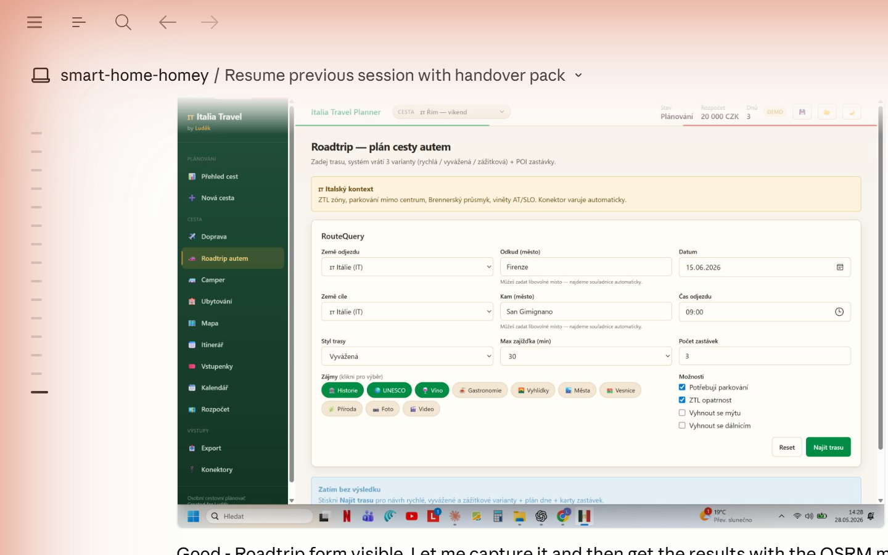

Italia Travel Planner
Osobní cestovní plánovač pro cesty do Itálie. Naplánuj trasu, roadtrip, itinerář i vstupenky — vše na jednom místě, bez placených API.
🗺️ Mapy (Leaflet + OSM)
Interaktivní mapa s piny ze vstupenky, ubytování a atrakcí. Export do Google My Maps CSV.
🚗 Roadtrip plánování
Zadej odkud–kam, systém vrátí 3 varianty trasy (rychlá / vyvážená / zážitková) přes OSRM s polyline na mapě.
📅 Denní itinerář
Hodinový rozvrh na každý den. Záložní plány, food tips, praktické poznámky ve strukturované formě.
🎟️ Vstupenky
Přehled vstupenek s ověřenými cenami, rezervačními doporučeními a varováními (ZTL, dress code, frontová okna).
🌤️ Počasí
7denní předpověď přímo v přehledu cest a itineráři — data z open-meteo.com, bez API klíče.
🏕️ Camper / ubytování
Plánování kempů, B&B a hotelů s náklady a poznámkami integrovanými do rozpočtu.
Přehled cest
Úvodní stránka zobrazuje všechny cesty s živým počasím v destinaci, klíčovými štítky a celkovým rozpočtem. Aktivní cesta je zvýrazněna.

4 cesty — Bergamo, Italy camper roadtrip, Řím, Toskánsko. Živá předpověď z open-meteo.com.
Interaktivní mapa
Leaflet mapa s OpenStreetMap podkladem. Piny jsou generovány automaticky z dat cesty — letiště, hotely, atrakce, restaurace. Žádné Google Maps API ani API klíče.

Řím — 11 bodů zájmu. Leaflet + OpenStreetMap, zdarma, bez API klíče. Export do Google My Maps CSV.
Roadtrip — 3 varianty trasy
Zadej odkud–kam, datum a styl. Systém přes OSRM (free routing) spočítá vzdálenost a čas, navrhne zastávky a sestaví plán dne pro každou variantu.

Firenze → San Gimignano — Rychlá 59.1 km / 1h 3min · Vyvážená 68 km / 2h 42min · Zážitková 79.8 km / 4h 28min.
Roadtrip mapa — OSRM polyline
Po výpočtu trasy se zobrazí Leaflet mapa s reálnou OSRM polyline a kartami zastávek s akcemi: přidat do itineráře, na mapu nebo do kalendáře.

Modrá trasa OSRM přes Toskánsko. Zastávky: Greve in Chianti, Siena, Monteriggioni, San Gimignano. ZTL upozornění.
Denní itinerář
Strukturovaný hodinový program pro každý den — ráno, odpoledne, večer. Záložní plány pro špatné počasí a food tips přímo v itineráři.

Den 1 — Řím. Let PRG→FCO, Vatikán + Sixtinská kaple, Trastevere večer. Záložní plán při plném Vatikánu.
Vstupenky
Přehled vstupenek s ověřenými cenami z oficiálních zdrojů, upozorněními na dress code, ZTL zóny a časová okna. Alternativy z GetYourGuide pro porovnání.

Řím — Vatikán + Sixtinská kaple (50 EUR), Koloseum + Forum (36 EUR), Pantheon (10 EUR). Verified pricing.
Kde aplikaci najít
Aplikace existuje ve třech formách:
🌐 Webová aplikace
Hostovaná lokálně, funguje jako PWA. Otevřeš v prohlížeči, přidáš na plochu — funguje offline.
🚀 Web Launcher
Jednoduchý HTML launcher, který spustí aplikaci v okně bez lišty prohlížeče. Pro každodenní použití na PC.
🖥️ Windows App (Tauri)
Nativní Windows aplikace zabalená přes Tauri 2.0 + WebView2. Instalátor 1.6 MB, ikona v Start menu.
Technologie
Aplikace je napsaná jako pnpm monorepo — React frontend + Tauri desktop wrapper.
Žádné placené API. Routování přes OSRM (zdarma), mapy přes OpenStreetMap (zdarma), počasí přes open-meteo.com (zdarma).